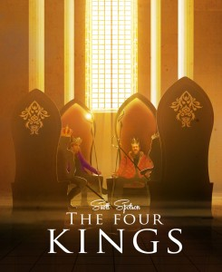
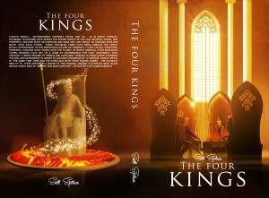

From the journal
"The Four Kings" is Out!
From the original website · 2013-10-22
The Four Kings, a wizard mischief story, is now available on Kindle. Paperback to be ready within a day or two.
Here is the Kindle version: http://www.amazon.com/The-Four-Kings-Scott-Spotson-ebook/dp/B00G2J1W32
If you liked "Seeking Dr. Magic," you'll love "The Four Kings." Four times the number of wizards, and this time, they take over North America! With Ayn Rand as their beloved political philosopher, they set out to abolish all governments in North America - city, state, and federal! At the same time, they entertain the human with the ultimate reality TV - wizard games.
Like going back to the times of Rome, but with magic.
Here is the Kindle version: http://www.amazon.com/The-Four-Kings-Scott-Spotson-ebook/dp/B00G2J1W32
If you liked "Seeking Dr. Magic," you'll love "The Four Kings." Four times the number of wizards, and this time, they take over North America! With Ayn Rand as their beloved political philosopher, they set out to abolish all governments in North America - city, state, and federal! At the same time, they entertain the human with the ultimate reality TV - wizard games.
Like going back to the times of Rome, but with magic.



